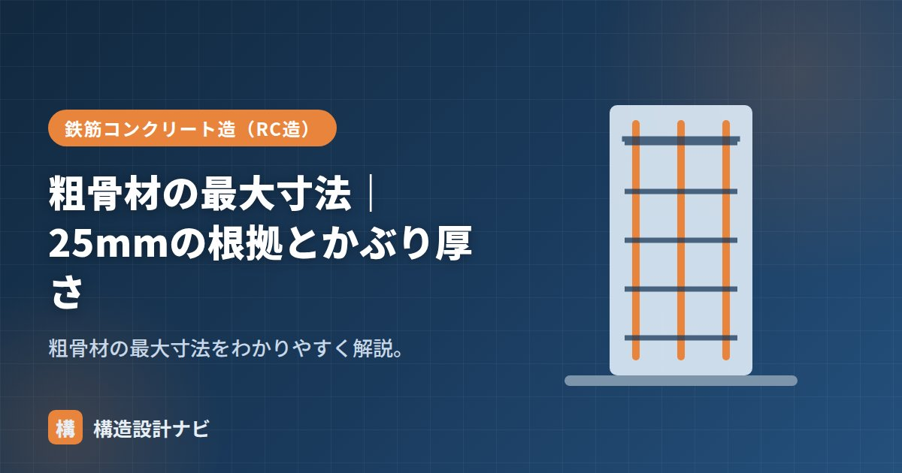

粗骨材の最大寸法｜25mmの根拠とかぶり厚さ

粗骨材の最大寸法（Gmax）とは、粗骨材の粒の大きさの上限を表す値のことです。鉄筋のすき間やかぶりを通って、コンクリートがすみずみまで充填できるかどうかに直結する、配合設計上の重要な指標です。粗骨材そのものの種類や品質は「粗骨材とは」で扱いますが、この記事では大きさの上限をどう決めるかにしぼって掘り下げます。
- 最大寸法は「質量で90%以上が通る、ふるいの最小の呼び寸法」で定義され、ふるい分け試験で求める。
- 一般のRC造では経済性と充填性のバランスから20mmまたは25mmが標準。
- 鉄筋あき・部材寸法・かぶり厚さという3つの制限をすべて満たす必要がある。
意味と求め方
粗骨材の最大寸法とは、質量で90%以上が通るふるいのうち、最小のふるいの寸法のことです。骨材を複数の目の粗さのふるいにかける「ふるい分け試験」を行い、通過率が90%を上回る最小のふるい寸法を採用します。一般のコンクリートでは20mmまたは25mmが使われます。
20mm・25mmが使われる根拠
最大寸法は、大きいほど骨材どうしのすき間が減り、すき間を埋めるセメントペースト（セメント＋水）の量を減らせるため経済的で、発熱量も抑えられます。しかし大きすぎると鉄筋のすき間を通らず充填不良（ジャンカ・豆板）の原因になります。このバランスから、一般のRC造では20mmか25mmが標準として広く使われています。
3つの制限（鉄筋あき・部材寸法・かぶり）
最大寸法は、次のいずれも満たすように定めるのが原則です。
| 制限（いずれも満たす） |
|---|
| 鉄筋の最小あきの3/4以下 |
| 部材の最小寸法（幅・厚さなど）の1/5以下 |
| かぶり厚さ以下（充填できること） |
断面が大きく鉄筋のない無筋コンクリート（土間コンクリートなど）では、これらの制約がゆるいため40mm程度の大きな骨材を使うこともあります。逆に、鉄筋が密に入る柱・梁の接合部やポンプ圧送を行う現場では、より小さい最大寸法が選ばれることもあります。
かぶり厚さとの関係
粗骨材は、鉄筋と型枠の間（＝かぶり）や鉄筋どうしのすき間を通って流れ込みます。最大寸法が大きすぎると、この狭い隙間に骨材が引っかかってブリッジ（架橋）を起こし、コンクリートが奥まで回り込めず充填不良になります。だから最大寸法はかぶり厚さや鉄筋あきとの関係で制限されるのです。配筋が密な部材ほど小さめの骨材を選びます。
計算例
例えば、鉄筋の最小あきが30mm、部材の最小寸法が200mmの柱を考えます。鉄筋あきの3/4は22.5mm、部材最小寸法の1/5は40mmとなるため、より厳しい制限は鉄筋あきの22.5mmです。この場合、粗骨材の最大寸法は22.5mm以下、つまり実務上は20mmを選ぶことになります。このように、複数の制限のうち最も厳しい値で最大寸法が決まる点がポイントです。
最大寸法だけを大きくしてコストを下げようとすると、配筋が密な部分でジャンカが発生しやすくなります。逆に、必要以上に小さい骨材ばかりを使うと、セメントペーストの量が増えて乾燥収縮やコストが増加します。設計段階で配筋（鉄筋あき）とかぶり厚さを確認したうえで、施工上無理なく充填できる最大寸法を選定することが大切です。
構造計算書のチェックでは断面や配筋ばかり見られがちですが、私は柱梁接合部の配筋詳細図を描く際に、鉄筋あきと粗骨材の最大寸法の整合を必ず逆算で確認します。せいの決まったあとに配筋を詰め込んで、実は骨材が通らない狭あきになっているという図面上の見落としを何度も経験しているためです。
3つの制限（図解）
| 制限 | 条件 |
|---|---|
| ① 鉄筋の最小あき | その3/4以下 |
| ② 部材の最小寸法 | その1/5以下 |
| ③ かぶり厚さ | それ以下（かぶりを通れること） |
計算例：どの寸法を選ぶか
条件：梁の幅400mm、主筋D25を6本配置、鉄筋のあき40mm、かぶり厚さ40mm
| 制限 | 計算 | 上限値 |
|---|---|---|
| 鉄筋のあき | 40 × 3/4 | 30 mm |
| 部材の最小寸法 | 400 × 1/5 | 80 mm |
| かぶり厚さ | 40 | 40 mm |
もっとも厳しいのは鉄筋のあきによる30mmです。したがって、この部材には粗骨材最大寸法25mmのコンクリートを選定します（20mmでも可）。このように、3つの制限のうちもっとも小さい値が支配することになります。
高強度の柱や梁では主筋が太く本数も多くなり、鉄筋のあきが狭くなります。この場合、粗骨材最大寸法を小さくする（20mm→13mmなど）ことで対応しますが、骨材が小さくなるとペースト量が増えて収縮・発熱が大きくなります。配筋の密度と骨材寸法はトレードオフの関係にあり、構造設計と材料設計の両面からの調整が必要になります。
よくある質問
Q1. 粗骨材最大寸法25mmと20mmはどう使い分けますか？
配筋の密度と部材寸法で決まります。制限を満たすなら25mmのほうが経済的です（ペースト量が減るため）。ただし配筋が密な部材や、部材寸法が小さい場合は20mmを選びます。実務では、生コン工場で常時扱っている寸法が20mmか25mmかによって決まることも多く、事前確認が必要です。
Q2. 最大寸法が大きいと強度は上がりますか？
むしろ、やや下がる傾向があります。粒が大きいほど骨材とセメントペーストの界面（遷移帯）が弱点になりやすく、同じ水セメント比なら強度は若干低くなります。特に高強度コンクリートでは、最大寸法を小さくしたほうが有利です。最大寸法を大きくする利点は強度ではなく、ペースト量の削減による経済性・低発熱・低収縮にあります。
Q3. 鉄筋の最小あきはどう決まりますか？
鉄筋径・粗骨材最大寸法・25mmのうち最大の値以上とするのが原則です（部位により規定が異なります）。つまり、粗骨材最大寸法と鉄筋のあきは互いに制約し合う関係にあります。配筋設計の段階で使用するコンクリートの骨材寸法を想定しておかないと、後から骨材寸法の変更が必要になることがあります。
まとめ
- 粗骨材の最大寸法は「質量で90%以上が通る最小ふるい寸法」。ふるい分け試験で求め、一般は20/25mm。
- 鉄筋あきの3/4以下・部材最小寸法の1/5以下・かぶり以下という3つの制限のうち最も厳しい値で決まる。
- 大きいほど経済的だが、充填性のためかぶり・配筋に応じて適切な最大寸法を選ぶ。